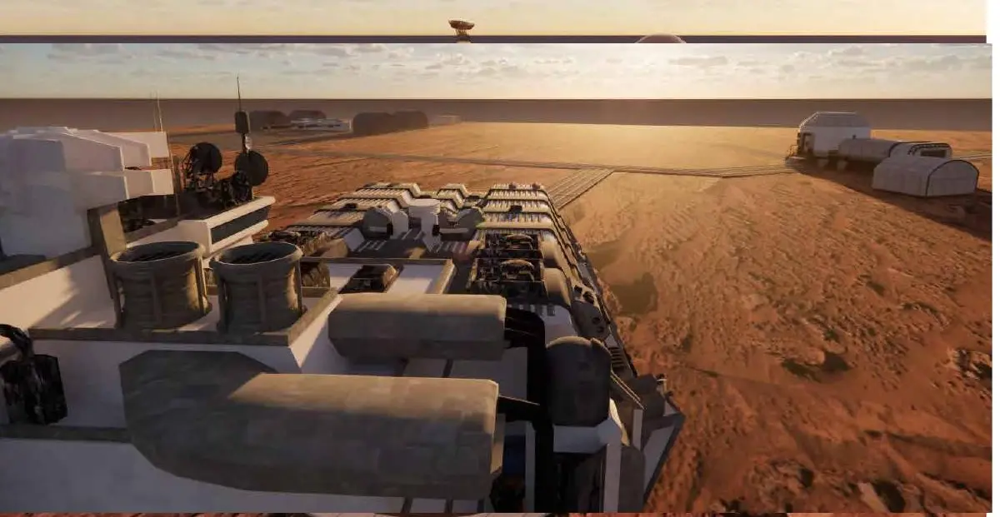
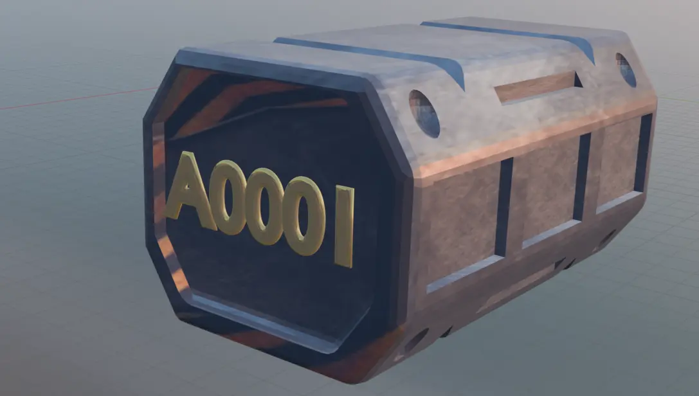
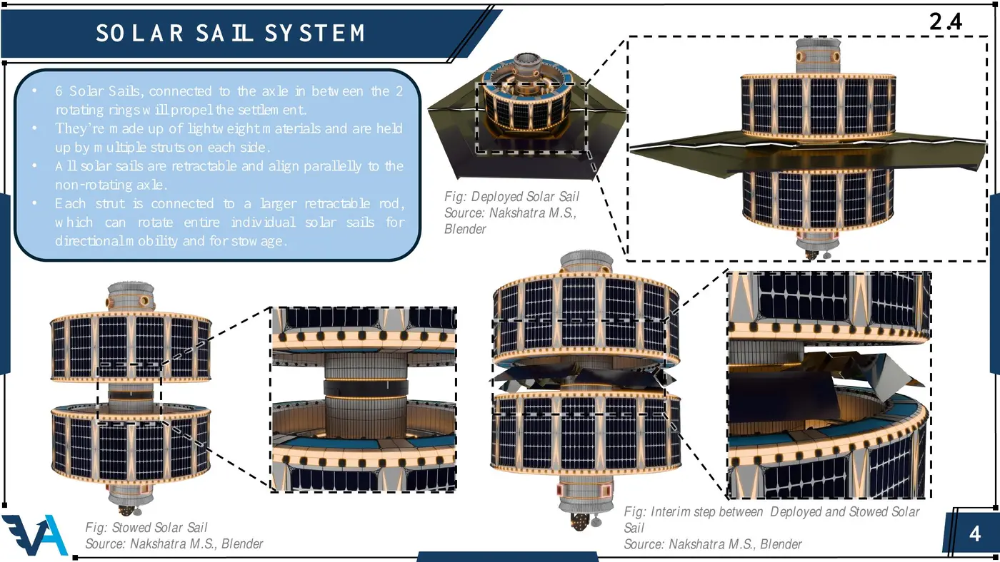
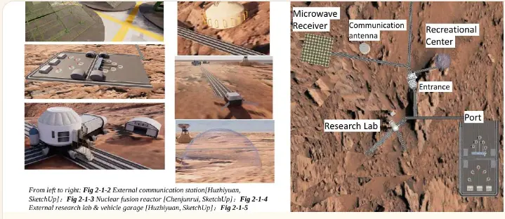
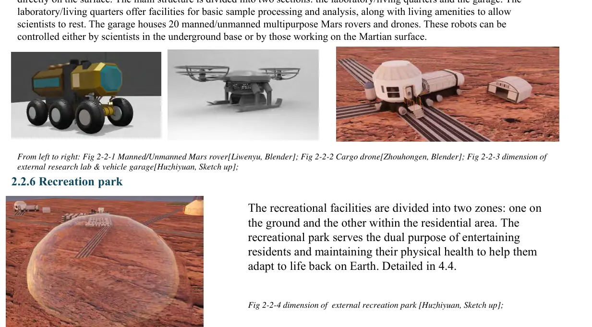

The group-based International Space Settlement Design Competition turned a childhood idea into systems engineering: habitats, mobility, robotics, infrastructure, resources, and the human life that has to fit inside them.
ISSDCSpace settlement design
ChampionAsia Finals + China Finals
Team projectDesign · presentation · modeling
3D portfolioMasterplans to robots

MY ORIGINAL DESIGN CONTRIBUTIONS
Systems I designed myself.
I developed a standardised cargo container for the China Final and a retractable solar-sail system for the Asia Final—two ideas with distinct engineering roles.

CHINA FINALS / CARGO CONTAINER
One module, from arrival to reuse.
I designed the A0001 cargo-container concept as a reusable transport unit for a Mars settlement. Its regular protected form supports robotic handling, airlock transfer, storage, and repeated deployment, turning cargo movement into a standardised logistics system rather than a one-time delivery task.

ASIA FINALS / SOLAR SAIL
Making the settlement itself mobile.
I designed a retractable solar-sail system that places six lightweight sails around the non-rotating axle between the habitat rings. The sails can deploy to capture solar-radiation pressure, rotate for directional control, and retract for storage, linking propulsion to the settlement's own structure.
MY ORIGINAL ENGINEERING CONCEPT
Light at launch. Protected in orbit.
For this competition, I addressed a difficult engineering trade-off: a habitat had to remain light and compact enough for launch, yet still protect its crew from hypervelocity micrometeoroids once in orbit. Rather than relying on a heavier rigid shell, I proposed an expandable multilayer system that combines a Stuffed Whipple Shield with flexible composite pressure fabric. The module launches folded inside the rocket fairing, then inflates after orbital insertion. A raised outer layer and elastic buffer create a protective gap: on impact, they spread and weaken the collision energy before it reaches the pressure hull. The fragments are then broken apart and reflected outward, while the inner habitable volume remains intact.
It is a network of interdependent systems. Each system creates concrete problems that have to be solved—water, sensing, materials, control, communication, human wellbeing, governance, and more. Those problems became the starting points for my research.
01 / SURVIVE
Resources + infrastructure
Water, energy, safety, environmental control, and resilient materials.
02 / SENSE
Perception + communication
Optics, sensing, imaging, networks, and data that tell a city what is happening.
03 / ACT
Mobility + control
Robots, transport, feedback, and engineered systems that turn information into action.
04 / LIVE
People + institutions
Privacy, mental health, responsibility, governance, and a community worth sustaining.
THE SETTLEMENT AS A NETWORK
What the city actually looks like.
Surface facilities connect research, communication, recreation, energy, transport, and access to the underground base. The city works as a connected system rather than a collection of isolated buildings.


A CONNECTED CITY
Every facility has a role in a larger system.
Research, communication, mobility, energy, recreation, and access are physically linked. One view shows the facilities themselves; the other maps how those nodes connect across the surface. Together, they turn the settlement from a collection of objects into an operating system.
A CITY FOR PEOPLE
Engineering a place to belong.
Habitats and machines keep a settlement operating; social design determines whether people can actually build a life there. I therefore treated privacy, recreation, healthcare, shared responsibility, psychological support, and community as design requirements rather than decorative extras.
PRIVATE · personal space · rest · autonomySHARED · recreation · healthcare · cooperationRESPONSIBLE · judgment · governance · human intervention
3D MODELING / GROUP DESIGN
32 selected views from the settlement.
These are 32 representative views selected from the team’s broader 3D design work. Explore the sample by MASTERPLAN, HABITAT, SURFACE, MOBILITY, ROBOTICS, and OBJECTS.